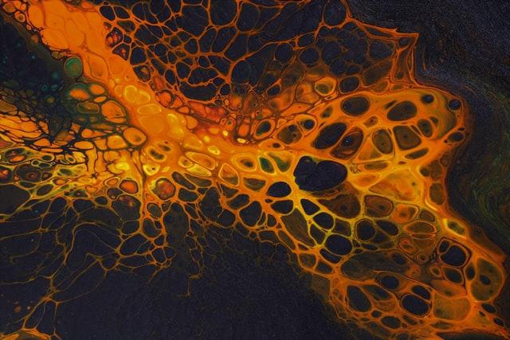

The road of life
ah yes the road of life
At some turn along life,
there THEY comes with their assault of strife
with winds that rage and winds that blow,
they beat, make meat of the courageous feat.
To live is hard. Is it?
The weapons of these diabolical demons,
are seldom understood or even from my hood.
They beckon me come and surrender the fight.
They beckon me come and surrender the night.
What of hopes and dreams and joy and streams,
What of health and wealth,
when it's all abated.
They come with his assault of strife,
attacking and sucking me into the darkness.
I fight, I kick, I whip, I punch,
I raise my hand, but I get pulled in a bunch.
They are strong, far stronger than me,
They deep in my mind causing calamity.
Turn back turn back the light onto me,
Turn back turn back its uncomfortable inadequacy.
FIGHT! FIGHT! I say. I say.
But the warmth of day is gone
All around me has diminished, chaos around. Chaos.
Hope what of it, I know it intellectually.
But she is hidden. Where I don't know?
How did it get all so complex.
How did THEY get so strong.
Who are THEY and why do me wrong.
My legs are deep in the myrrh now, DEEP.
Darkness is upon me, and I can't intellectualize myself away
A crack from the heavens
A fizzle? a ray? a sparkle? a way.
Some spirit illuminates
"My grace is sufficient for thee: for my strength is made perfect in weakness."
HUH.
What did it mean?
I began to tussle with the words of the spirit,
I wrestle, turn, twist and contort,
hammering against 14 challengers a new,
looking for answers for this light so few.
And little did I notice,
that as I wrestled with the 14 challengers that day,
my contention with THEY went away,
darkness still loomed in the distance,
but the battle was over, for now.
I recited the words of the spirit,
and then it hit me like a ton of bricks succinctly,
That it was never about MY OWN *strength** to overcome
But I was already equipped with *grace sufficient* to step out the darkness
Despite my inherent weakness.
They will be back soon, one day,
and in my weakness to these words I shall cling.